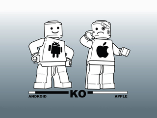

En los tiempos que corren, en los que la tecnología está cada vez más al alcance de los usuarios y la variedad de dispositivos y plataformas es amplia, es lógico que se vayan formando facciones entre los usuarios en pro de un fabricante o de un sistema operativo en concreto. A día de hoy, dos [...]

En los tiempos que corren, en los que la tecnología está cada vez más al alcance de los usuarios y la variedad de dispositivos y plataformas es amplia, es lógico que se vayan formando facciones entre los usuarios en pro de un fabricante o de un sistema operativo en concreto.
A día de hoy, dos de los ejemplos más claros se encuentran en los usuarios de Apple y los usuarios de Android, que mantienen un frente abierto en toda regla, tratando de demostrar, a como dé lugar, cual es el mejor.
Por un lado tenemos a los usuarios de Apple, que defienden a capa y espada la estabilidad y fiabilidad de sus dispositivos, tales como ordenadores, reproductores multimedia o sus famosos iPhone.
El logotipo de la manzana mordida se ha convertido en todo un icono de la cultura popular y en sinónimo de calidad, además de sinónimo de precios cuasi prohibitivos. Sí, es cierto que su productos son de muy buena calidad, con un diseño muy cuidado y característico y que su sistema operativo es estable y bastante facilón, lo que en inglés se llama “user friendly”.
A pesar de estas ventajas, sus dispositivos cuentan con una compatibilidad reducida, haciendo que su conectividad se vea limitada a dispositivos de la misma marca o diseñados específicamente para ellos.
Esto nos lleva hasta los usuarios de Apple. Normalmente estereotipizados como pijos o gafapastas/modernos en situación económica acomodada o en profesionales del diseño, de la música o del vídeo, los cuales, siempre han sido los usuarios originales y auténticos de Apple, siendo los primeros unos fashion victims.
Los más fieles a la marca, más que clientes satisfechos, parecen una jihad, que llegan incluso a despreciar a los usuarios de otras plataformas aún a sabiendas de que no llevan las de ganar, ya que, contrariamente a lo que la gente piensa, Apple no se caracteriza por tener máquinas ultrapotentes ni por disponer de lo último en hardware. Suelen ir un poco por detrás de otros fabricantes. No obstante, su éxito reside en su programación. Disponen de sistemas operativos específicamente diseñados y calibrados para el hardware que utilizan, lo que hace que le saque hasta la última gota a este.
Aún así, el usuario de Apple defenderá y sostendrá que su dispositivo es muy superior a otro que no sea de ese fabricante alegando que no se cuelga nunca, que su diseño es mucho mejor y un sinfín de cualidades a favor de su dispositivo en las que cree firmemente porque Apple, hace bien su trabajo y, además de un buen dispositivo, les vende a sus clientes un status social, no es lo mismo un usuario que tiene un portátil de Acer y un móvil y/o tablet Android o Windows Phone que uno que tiene un MacBook, un iPhone y un iPad. Tener estos dispositivos, hace que otros vean a este usuario como un privilegiado, lo que hace que su orgullo y su fanboyismo lleguen a cotas insospechadas, convirtiéndolo en un auténtico fanático.
Por otra parte, nos encontramos a los usuarios de plataformas como Android, sistema operativo móvil muy frecuentemente asociado a frikis y a geeks de la informática, que se pasan el día descargando y probando aplicaciones, además de someter a sus terminales a toda clase de modificaciones, como el flasheo de ROMs o el overclocking.
Estos usuarios pueden parecer, de primeras, menos fanáticos que los de iPhone, pero son igual de fanáticos, no os dejéis engañar, el fenómeno Android es muy reciente y y ha crecido como la espuma, alcanzando cuotas de mercado altísimas y en muy poco tiempo, por lo que su número de usuarios es muy elevado.
El usuario de Android está realmente orgulloso de las amplias posibilidades de personalización de su teléfono, además de la libertad que le brinda una vez que lo rootea y empieza a modificar el comportamiento de la CPU, la GPU, la RAM y demás funciones del teléfono.
El androide defiende su terminal con argumentos como la “libertad” que te da para hacer con él lo que te plazca, mayor número de aplicaciones gratuitas, mayor frecuencia de actualización, cantidad de ROMs personalizadas, mayor potencia de hardware, personalización de menús, widgets y soporte para reproducir contenido Flash (descanse en paz).
Al defender la potencia del hardware es donde el androide se pilla los dedos, muchas veces, sin saberlo. El problema de android es que es un sistema operativo un tanto genérico, es decir, Google lanza el SO y cada fabricante le superpone su interfaz y lo instala en sus terminales, sin embargo, no está optimizado para un modelo en concreto, a excepción de los célebres Nexus de Google (y estos tampoco están 100% adaptados al hardware). Ventaja para Apple, iOS es sólo para su iPhone, mientras que Android tiene que ir a parar a tropecientos terminales de distintas características. Aún así, el androide seguirá apoyándose en su potente dual-core o quad-core a X Ghz, auqnue el sistema operativo no aproveche todos los recursos. Si este argumento falla, saltará con las aplicaciones gratis, la personalización y un sinfín de argumentos que, al usuario medio, le suenan a chino y le importan un pimiento.
Estos son los dos casos más típicos y frecuentes de fanboyismo y es una guerra abierta en todo su esplendor. Cierto es que están los usuarios (por usuarios me refiero a aquellos que le dan el uso debido a su BB, no a las chonis adictas al BB Messenger) de Blackberry, pero estos no son tan beligerantes como los anteriores, ya que saben que su sistema operativo es austero pero muy funcional y su hardware no puede competir contra terminales como el iPhone o el Galaxy Nexus.
Y Windows Phone que, simplemente, está ahí y en esto del fanboyismo ni pincha ni corta debido a su reciente aparición, a su lentísima expansión y la poca cantidad de terminales que lo equipan.
Particularmente, yo soy defensor de Android (aunque no a ultranza, soy consciente de sus muchos defectos), en mi casa se cuentan dos Galaxy S (de mi señor padre y mi señora madre), una Galaxy Tab 10.1 (de mi señor padre), un Galaxy S2 (de un servidor) y una Galaxy Tab 7″ (también mía). Esta guerra fanboyista la mantengo con un tío mío que tiene todos los cacharros habidos y por haber de Apple y, pese a que reconozco que Apple ofrece un producto excelente, me quedo con mi portátil de Acer al que puedo someter a toda clase de vejaciones tecnológicas, mi Galaxy Tab overclockeada a 1’3 Ghz y mi Galaxy S2 overclokeado a 1’6 Ghz con una ROM de ICS (4.0.3) y superviviente a toda clase de golpes y accidentes, como por ejemplo salir por la ventana de mi coche a 80 kms/h (me hubiera gustado ver como queda un iPhone después de eso). Me siento muy cómodo con Android, y teniendo algo de idea, se le puede sacar muchísimo partido a un terminal equipado con este SO, desde mi punto de vista, más que a cualquier otro terminal.
De todos modos, esto del fanboyismo, lo considero una soberbia estupidez que no conduce a ninguna parte. Ambos bandos se atrincheran en las maravillas que ofrecen sus respectivas plataformas, cuando el conflicto se resuelve con una simple pregunta: “¿Te sirve para lo que quieres? ¿Cubre tus necesidades?”
Seguramente también te interesará...
- No hemos encontrado nada relacionado, debe de ser contenido fresco :D


 Bienvenidos, una vez más, a Apps Chorra y Rumores de la Semana, una sección semanal, como bien indica el título, en la que os traemos un par de rumores de lo que podría ser el futuro, junto a otro par de aplicaciones chorra con las que podréis pasar un buen rato…
Bienvenidos, una vez más, a Apps Chorra y Rumores de la Semana, una sección semanal, como bien indica el título, en la que os traemos un par de rumores de lo que podría ser el futuro, junto a otro par de aplicaciones chorra con las que podréis pasar un buen rato…

 Buenas a todos/as, y bienvenidos sean a Fandroide, un artículo que preparamos semana tras semana donde os traemos para vosotros lo más friki, lo mas especial, lo más raro… que puede llegar a rondar por Internet, en definitiva: Lo más Android que puede estar en la red…
Buenas a todos/as, y bienvenidos sean a Fandroide, un artículo que preparamos semana tras semana donde os traemos para vosotros lo más friki, lo mas especial, lo más raro… que puede llegar a rondar por Internet, en definitiva: Lo más Android que puede estar en la red…